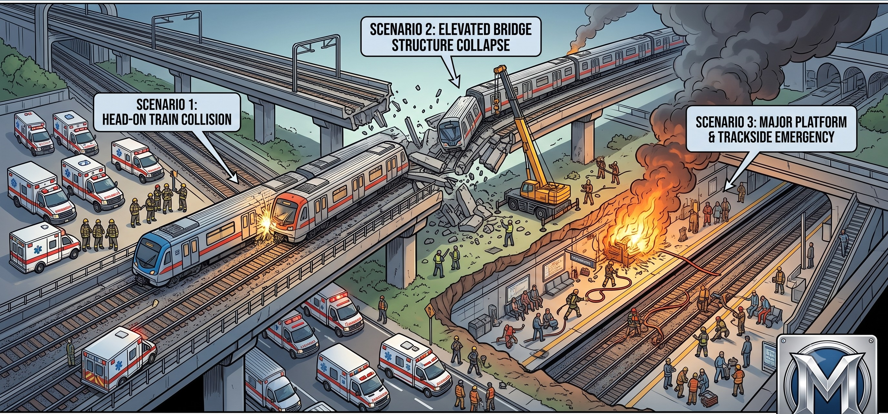
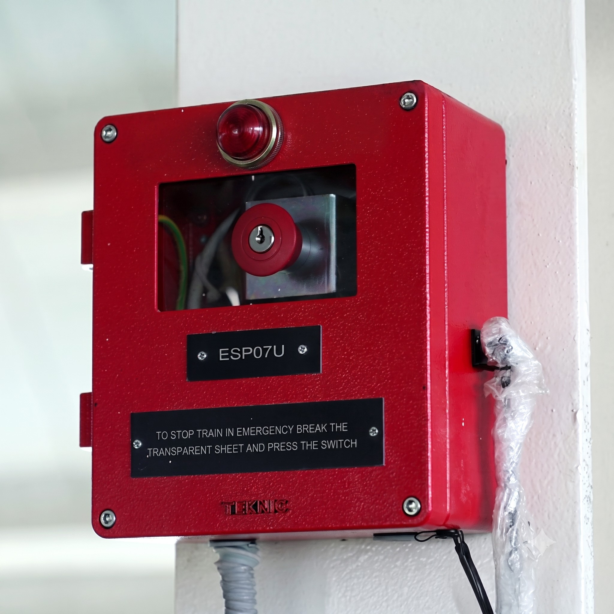
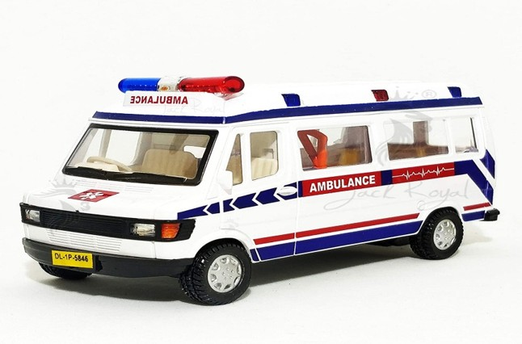
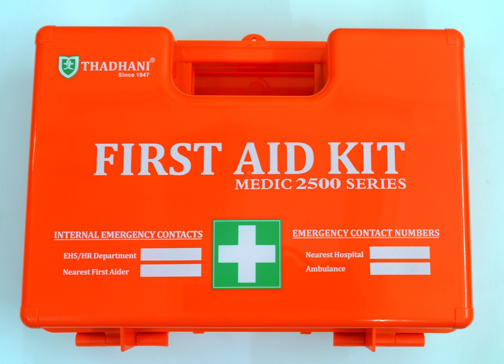
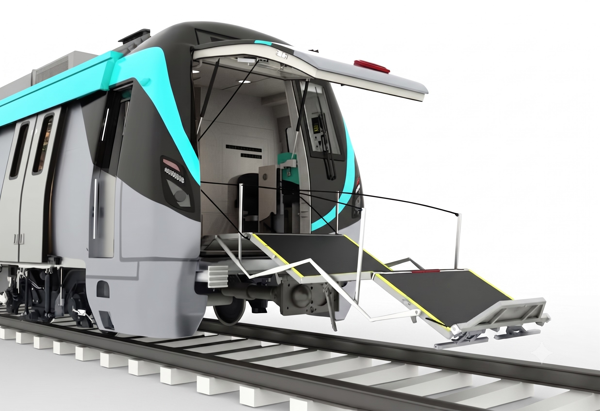
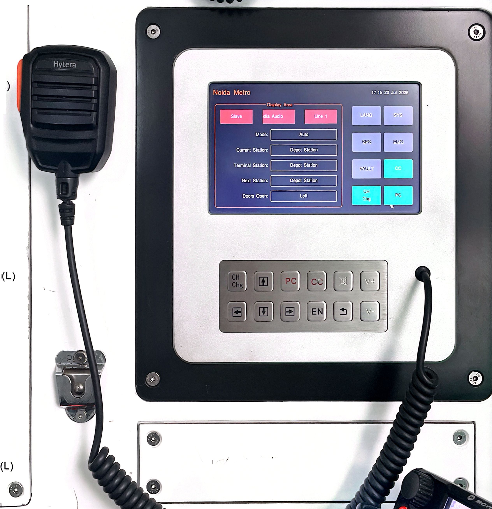
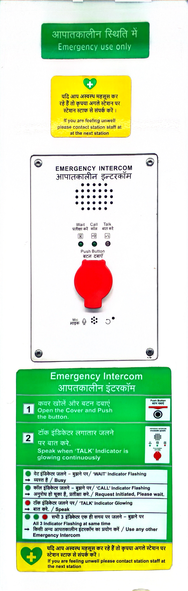
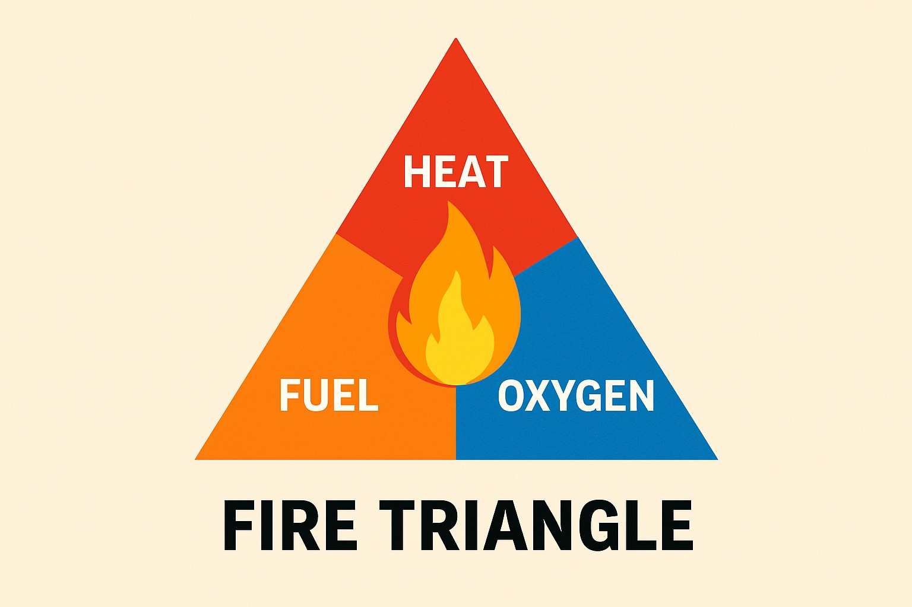
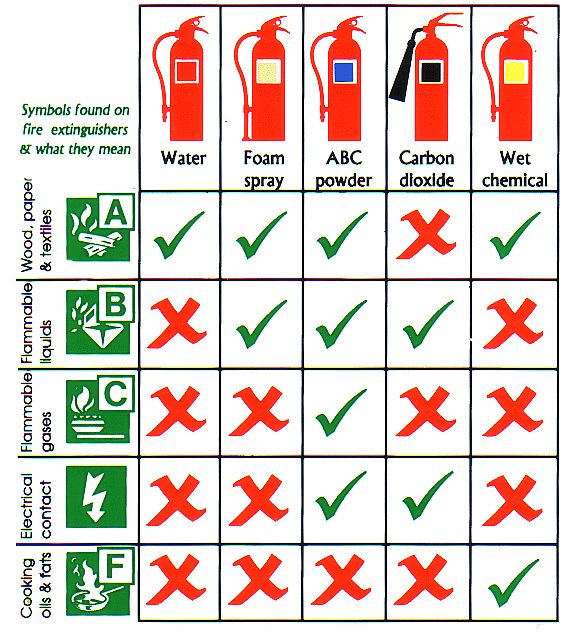

ACCIDENT & DISASTER MANAGEMENT MANUAL & CONTINGENCY PLAN
Prepared By: [Department / Author Name]



Civil and Structural Resilience
- Seismic Design: Located in Seismic Zone IV, the elevated track and infrastructure are designed to withstand an earthquake of intensity 7 on the Richter scale.
- Building Standards: Metro Station buildings are categorized as assembly buildings. Fire safety equipment is installed strictly per the National Building Code requirements.

[source: 1]Standard Operating Procedure (SOP) – Station
- Immediate response to station fire alarms.
- Execution of emergency evacuation protocols.
- Rapid mobilization of emergency services.
- Systematic response to local incidents and crowd management.
- Deployment of Emergency Stop Plunger (ESP) & Platform Supervisory Booth (PSB).
 [source: 1]
[source: 1]
Medical Facilities
- Emergency Coordination: Seamless coordination with private and government ambulance services (Dial 102 or 1098).
- First Aid: Fully equipped first-aid boxes are readily available across all stations and onboard all trains.

[source: 1]
[source: 1]Passenger Information System (PIDS/PAS)
- Visual Displays (PIDS): Double-sided PIDS boards are installed on each platform; single-sided PIDS boards serve the concourse area.
- Audio System (PAS): The Public Address System ensures clear audio announcements covering the entire station layout.
 [source: 1]
[source: 1]
[source: 1]
[source: 1]
Fire Protection & Evacuation Protocols
- 30-Minute Shield: Underfloor 30-minute FRP allows critical time to transit to the nearest station during a fire incident.
- Emergency Doors: Designated doors facilitate rapid passenger evacuation.
- Egress & Access Devices: Every door features an interior Emergency Egress Device; L2/R3 doors are equipped with exterior Emergency Access Devices for rescue teams.

[source: 1] [source: 1]
[source: 1]
Passenger Communication System
- Public Address: Trains feature a robust PA system integrated with automated, pre-recorded emergency guidance announcements.
- PECU: Provision of Passenger Emergency Communication Units (PECU) allows immediate two-way contact with train operations staff during distress.

[source: 1]
[source: 1] [source: 1]
[source: 1]
 [source: 1]
[source: 1]
Disaster Categorization
Man-Made Disasters:
Fire, derailment/collision, stampede, terrorist attacks, bomb threats, chemical/biological gas release, and sabotage.
Natural Calamities:
Earthquakes, floods, and severe wind storms.
 [source: 1]
[source: 1]
 [source: 1]
[source: 1]
Fire Management & Electrical Safety
Fire is recognized as one of the most critical hazards in metro operations, categorized into: Electrical Equipment Fire, Train Fire, and Station Premises Fire.
⚠️ CRITICAL SAFETY RULE:
No water shall EVER be used to extinguish an electrical fire.
No water shall EVER be used to extinguish an electrical fire.
- In the event of an electrical fire, power supply must be cut off immediately by informing the Traction Power Controller.
- Inert gas flooding and clean-agent extinguishers must be deployed instead of water-based suppressants.

[source: 1]
[source: 1]Fire Onboard a Train
- Train Operator (TO) must immediately inform OCC upon observing fire or continued tripping between stations.
- TO assesses whether the train can safely reach the next station platform.
- If unsafe to proceed or disabled, TO uses onboard fire extinguishers to fight the blaze.
- Once extinguished, passengers are detrained at the next station and train is withdrawn.
- If uncontrollable, TO evacuates passengers immediately via track while OCC halts adjacent line traffic.
 [source: 1]
[source: 1]
Fire at Station Premises
- Station Controller (SC/SM) immediately alerts OCC and calls for Fire, Police, and Medical assistance.
- Sound station hooters and make clear PA announcements directing passengers to designated emergency exits.
- Coordinate with police and security for orderly crowd control to prevent panic.
- Isolate the affected area using Q-managers and deploy station suppression systems.
- Electrical/Traction staff must isolate and cut power to the affected sector.
Train Collisions
- Witnessing employee must immediately alert OCC with exact location and fire status.
- Priority: If adjacent track is infringed, protect it first to prevent secondary accidents.
- Render immediate first aid and execute OCC-approved evacuation.
Stampede Control
Causes: Panic from accidents, festival rushes, or road diversions.
- SC takes active control of concourse and platforms.
- Deploy Q-managers and seek PAC/Police reinforcement.
- Use calming, authoritative PA announcements to prevent panic.
 [source: 1]
[source: 1]
Terrorist / Bomb Threat
- Immediate evacuation & closure of affected network sector.
- No resumption of operations until clearance from Bomb Disposal Squads.
- In a train blast: detrain passengers safely, isolate train, and initiate triage.
 [source: 1]
[source: 1]
Chemical / Gas Release
Indicators: Odors, choking, eye/skin irritation, or fainting.
- Immediate complete evacuation of train or station area.
- Train doors must be closed after evacuation to prevent gas spreading across platforms.
- Hand over site to specialized Medical & Police CBRN units.
 [source: 1]
[source: 1]
Anti-Sabotage Protocols
- Strict physical and technical surveillance of vital installations: SCR, ASS, OCC, and depots.
- Vigilance against external manipulation of housekeeping, security, or staff to extract sensitive system details.
 [source: 1]
[source: 1]
Earthquake Procedures
- Traffic Controller (TC) instructs TOs to stop trains and report positions.
- At Station: Train remains held at platform until OCC clearance.
- Between Stations: TO conducts visual track check. If clear, proceed at walking speed to next station.
- Normal service resumes only after structural fitness cert is issued.
 [source: 1]
[source: 1]
Disaster Preparedness
Regular mock drills evaluate staff readiness, test inter-agency coordination, and reinforce emergency guidelines in real-time scenarios.
Reference Documents
- General Rules 2020: Chapter VII – Accidents & Unusual Occurrences.
- Handbook: Dealing With Serious Incidents, Accidents And Disasters.
- Safety Circulars: SC-19 (Terrorist attack) & SC-20 (Detrainment).
Summary of Executed Mock Drills
| Date | Station / Location | Simulated Scenario | Documentation |
|---|---|---|---|
| 28-June-19 | Pari Chowk | Earthquake response & structural evacuation |
 [source: 1] [source: 1]
|
| 27-Sept-19 | Alpha-I to Delta-I | Fire inside train / Train immobile between stations |
 [source: 1] [source: 1]
|
| 07-Feb-20 | KP-II to Pari Chowk | Pantograph entanglement / OHE tearing |
 [source: 1] [source: 1]
|
| 08-Sept-21 | NGN Depot | Train derailment / Track-level passenger detrainment |
 [source: 1] [source: 1]
|